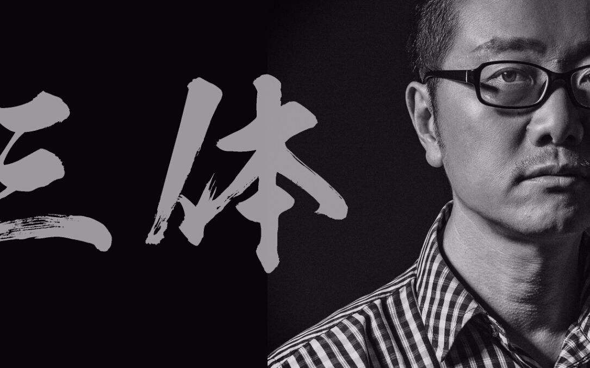

刘慈欣
1963年6月出生于北京。
科幻作家，中国作家协会会员、第九届、第十届全委会委员，
当代新生代科幻的主要代表人，被誉为“中国当代科幻第一人”。
重要事件
- 1999年6月，首次发表作品并凭借《带上她的眼睛》获奖
- 2000年发表短篇小说《地火》《流浪地球》，凭借《流浪地球》获得中国科幻银河奖特等奖
- 2001年发表短篇小说《乡村教师》《微纪元》《全频带阻塞干扰》等，凭借《全频带阻塞干扰》和《乡村教师》首度同时获得银河奖两项奖项
- 2002年至2005年间，刘慈欣凭借一系列中短篇小说连续获得中国科幻银河奖
- 2006年5月，《三体》出版后反响热烈并获得多项大奖
- 2010年10月出版第三部《三体3：死神永生》，再度获得中国科幻银河奖特别奖
- 2015年8月23日，刘慈欣凭借《三体》获第73届世界科幻雨果奖最佳长篇小说奖，成为第一位获奖的亚洲作家。
成就和荣誉
- 1999年中国科幻银河奖（第十一届）一等奖：《带上她的眼睛》
- 2000年中国科幻银河奖（第十二届）特等奖：《流浪地球》
- 2001年中国科幻银河奖（第十三届）：《全频带阻塞干扰》
- 2001年中国科幻银河奖（第十三届）读者提名奖：《乡村教师》
- 2002年中国科幻银河奖（第十四届）：《中国太阳》
- 2002年中国科幻银河奖（第十四届）读者提名奖：《朝闻道》、《吞食者》
- 2003年中国科幻银河奖（第十五届）：《地球大炮》
- 2003年中国科幻银河奖（第十五届）读者提名奖：《诗云》、《思想者》
- 2004年中国科幻银河奖（第十六届）：《镜子》
- 2004年中国科幻银河奖（第十六届）读者提名奖：《圆圆的肥皂泡》
- 2005年中国科幻银河奖（第十七届）：《赡养人类》
- 2006年中国科幻银河奖（第十八届）特别奖：《三体》
- 2010年中国科幻银河奖（第二十二届）特等奖：《三体III：死神永生》
主要作品
| 年份 | 作品名 |
|---|
| 1999年 | 《鲸歌》 |
| 2000年 | 《流浪地球》 |
| 2001年 | 《球状闪电》 |
| 2002年 | 《朝闻道》 |
| 2003年 | 《诗云》 |
| 2004年 | 《白垩纪往事》 |
| 2005年 | 《三体》 |
| 2006年 | 《山》 |
| 2007年 | 《三体II：黑暗森林》 |
| 2009年 | 《月夜》 |
| 2010年 | 《三体III：死神永生》 |
| 2012年 | 《烧火工》 |
| 2014年 | 《圆》 |
| 2018年 | 《黄金原野》 |
生活照

人物影响
刘慈欣已发表作品约400万字，并荣获国内多个文学大奖。他的代表作《三体》三部曲，即《三体》《三体Ⅱ·黑暗森林》《三体Ⅲ·死神永生》被普遍认为是中国科幻文学的里程碑之作，不仅备受读者与媒体的赞誉、获得了众多奖项的肯定，其超过100万册的国内销量也表明它经过了市场的检验，“将中国科幻文学提升至世界级水平”。2013年，刘慈欣以370万元的年度版税收入第一次登上了中国作家富豪榜，这也是国内科幻作家零的突破。
作为新中国输出到美国的第一篇长篇科幻小说，《三体》英文版在美国的出版发行令刘慈欣声名鹊起，并成为首部入围“星云奖”和“雨果奖”两项国际科幻大奖的作家，刘慈欣也因此被许多科幻迷和文学评论家冠以“中国科幻第一人”的美誉。